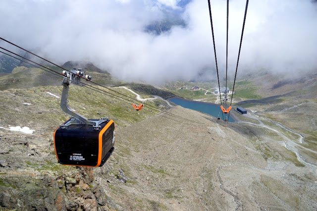

GHIACCIAIO

Si parte dalla stazione intermedia Fernau a 2,300 metri e si raggiunge la Scharte Niederl.
Entra nella Wilde Grub'n, dove è necessario un passo fermo e assenza di vertigini, e ci si lascia alle spalle la Wilde Grub'n passando a sinistra sul ponte.